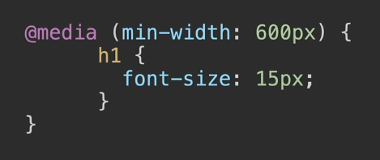
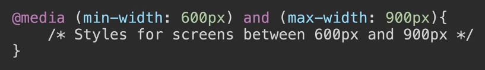
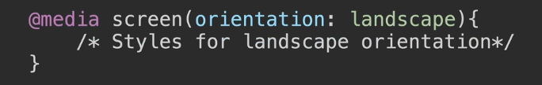

Media Queries
Adding breakpoints to define responsive layouts
Max Width
Essentially, instead of a selector, we have the "@media" keyword & here we can define what's called a breakpoint.
This essentially says that @ that particular width, anything that is less than or equal to 600px, then you should use the styling in there, instead.
We provide an override to the default styling.
For example, change the h1 to have a smaller font size when it's on a mobile phone instead of a full width desktop website.
Min Width

Now alternatively, you can use a different keyword here.
By changing that from max to min, essentially you're going the other direction of responsiveness.
So you're saying anything that is from 600px upwards, then we should have a different styling.
So you're basically targeting bigger screens with min-width.
So you're essentially targeting different screen sizes & providing different styles for those different screen sizes.
Combine

Now you can also combine different breakpoints to target something that is a specific size.
So in this case, minimum width for this style is 600px & maximum width for this style is 900px.
Now if you flip that around & you change the smaller size to a max-width, then you're taking a different approach.
You're saying anything that is less than 600px & anything that is greater than 900px on those screen sizes, let's apply these styles.
So you can combine things in many different ways.
Device

In addition to max-width & min-width, you might also see this "screen" keyword being used, which is not really necessary by default coz it's going to apply it to all screens, but if we think about the alternative to screen is a keyword called "print".
And what this allows you to do is to use the media query to target only when your website is being printed & to give it a different layout.
I don't normally recommend adding the screen keyword if you're just writing a normal media query, but when you do see it out there in the wild, then you'll know what that means, it's just saying targeting screens, or targeting print.
Demo code

This is saying when the website is a lot narrower, such as on a mobile phone, we should actually have a smaller square. So that it makes better use of the screen real estate & it's scaled to fit to that screen size.
💽Resourses
📖mdn web docs - Using media queries
There's a lot more that you can do with media queries & you can have very complex media queries, but most of the time you're going to be using pretty simple media queries such as max-width & min-width, & you won't use a lot of these other features.
But as always, it's good to be aware that they exist.
In the next lesson, we've got a final project for this section.